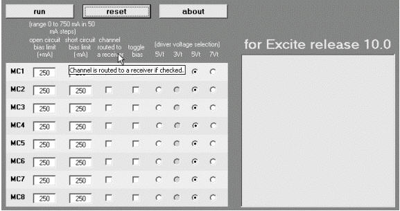
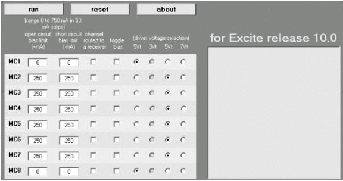
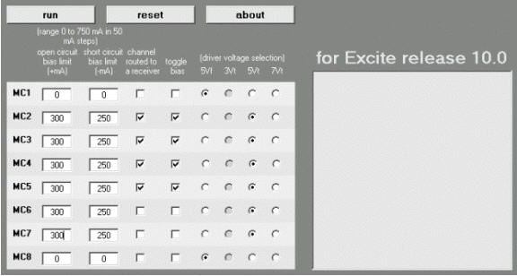
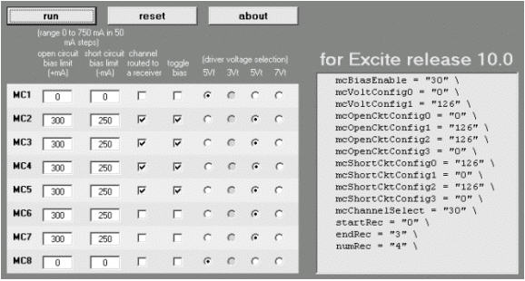
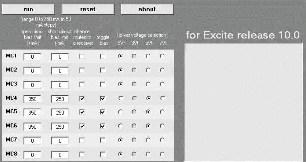
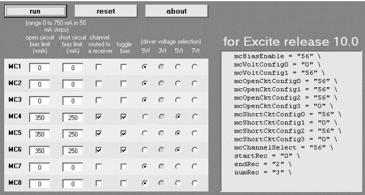
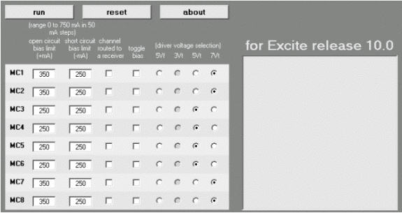
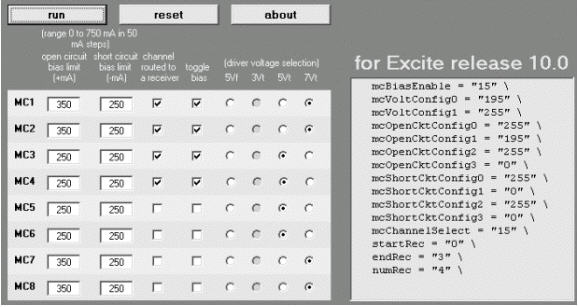
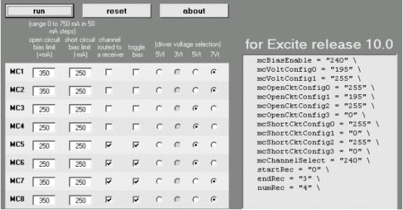
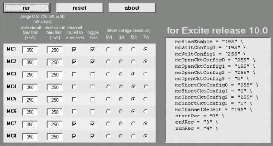

Operating Documentation
Direction 5133315-3, Rev# 14
Signa EXCITE HD 1.5T Service Methods
Module Version 1.0, Version Date 4/27/07
Operating Documentation |
A production USA Instruments 1.5T 4-channel CTL array was connected to a bay and the following gather load data results were obtained. (Note that this an excerpt from the complete file.)
Each channel is measured 5 times as shown by column headings mA1 through mA5 in Table 1.
Table 1: USCTLTOP 5 Volt Gather Load Data Results
| Channel Num | mA1 | mA2 | mA3 | mA4 | mA5 |
| Short_0 | -132 | -134 | -132 | -132 | -132 |
| Short_1 | -138 | -138 | -138 | -138 | -138 |
| Short_2 | -153 | -154 | -153 | -154 | -150 |
| Short_3 | -147 | -147 | -147 | -147 | -147 |
| Short_4 | -129 | -129 | -129 | -129 | -129 |
| Short_5 | -132 | -132 | -132 | -132 | -129 |
| Short_6 | -138 | -138 | -137 | -138 | -137 |
| Short_7 | -135 | -134 | -131 | -135 | -134 |
| Open_0 | 159 | 160 | 160 | 160 | 160 |
| Open_1 | 367 | 367 | 367 | 367 | 367 |
| Open_2 | 371 | 371 | 371 | 371 | 371 |
| Open_3 | 370 | 370 | 370 | 370 | 370 |
| Open_4 | 370 | 370 | 370 | 370 | 370 |
| Open_5 | 368 | 368 | 368 | 370 | 368 |
| Open_6 | 370 | 368 | 370 | 370 | 370 |
| Open_7 | 163 | 163 | 162 | 163 | 163 |
Compare these 5-Volt CTL results to those taken with nothing connected to the system. See Table 2. You should see that the short circuit (receive state, reverse bias) results are very similar between the interface results and those taken with the CTL array. This is true because the CTL array, like most other coils, consumes no current from the bias drivers in the reverse bias state.
Open circuit results are quite different, however. Note that Open_0 and Open_7 results are approximately the same whether the CTL coil is connected to the interface or not. This is because that coil has no circuitry connected to multi-coil channels 1 and 8.
It is very important to point out the offset between numbering of channels in the gather load data diagnostic output and multi-coil channel numbers in the interface. Be careful not to be confused by this. A trick the author uses is to manually renumber the test results using a text editor before using them to create a new coil definition. This is especially helpful when working with a complex coil.
Table 2: Interface 5-Volt Gather Load Data Results
| Channel Num | mA1 | mA2 | mA3 | mA4 | mA5 |
| Short_0 | -138 | -138 | -139 | -131 | -132 |
| Short_1 | -142 | -142 | -142 | -134 | -142 |
| Short_2 | -153 | -154 | -150 | -147 | -152 |
| Short_3 | -159 | -160 | -159 | -144 | -159 |
| Short_4 | -135 | -135 | -135 | -129 | -135 |
| Short_5 | -135 | -135 | -135 | -134 | -135 |
| Short_6 | -145 | -147 | -145 | -137 | -145 |
| Short_7 | -141 | -142 | -141 | -141 | -142 |
| Open_0 | 166 | 166 | 166 | 166 | 166 |
| Open_1 | 175 | 172 | 169 | 175 | 169 |
| Open_2 | 184 | 178 | 167 | 185 | 167 |
| Open_3 | 179 | 175 | 181 | 169 | 167 |
| Open_4 | 167 | 166 | 167 | 167 | 167 |
| Open_5 | 170 | 169 | 170 | 169 | 167 |
| Open_6 | 172 | 170 | 172 | 166 | 166 |
| Open_7 | 172 | 169 | 172 | 167 | 167 |
So, now that we have all these numbers, what do we do with them? First, we must decide whether it is necessary to even look at the 7-Volt results. Compare open circuit currents for the CTL array with those of the interface. Since we have already concluded that the coil does not use multi-coil channels 1 and 8, Open_0 and Open_7 respectively, these can be ignored. The CTL currents for multi-coil channels 2 through 7 average very nearly 370mA which is close enough for our purposes here. For most coils, as long as the current to a given channel is greater than about 250mA, it is not necessary to use 7 Volts. So we will not use 7 Volts in this case.
A good rule of thumb is that the open circuit bias fault limit for a given channel should be the multiple of 50mA that is 50mA less than the average current on that channel. So this case is simple: multi-coil channels 2 through 7 all average about 370mA and 370 minus 50 is 320. The nearest multiple of 50 that is less than 320 is our setpoint. The open circuit fault limit is 300mA for channels 2 through 7.
Now let’s go to the calculator. First set the driver voltage: Channels 1 and 8 are not used so click buttons in the 5Vf column for those channels. Click buttons in the 5Vt column for channels 2 through 7 to choose 5Volts for the transmit state, enable bias toggling on RF Unblank if selected and to enable bias fault detection. The calculator should now look like IllustrationIllustration 1.
Next, set channels to receive a signal which, for CTLTOP, is channels 2, 3, 4 and 5. The calculator should now look like Illustration 2.
Illustration 1: Choose Voltage Settings

Illustration 2: Choose Channels for Reception and Bias Toggling

Finally, set the open circuit limit to 300mA. You can change one channel and then copy and paste it into the others if you choose. Note that the calculator will not allow you to enter values for channels 1 and 8 because these channels are disabled. The result should look like Illustration 3.
Illustration 3: Set Bias Fault Limits for USCTLTOP

Now for the moment of truth. Click the [Run] button to calculate the results. It should now look like Illustration 4.
Illustration 4: Calculate Results for USCTLTOP

A new unnamed coil (we will call it NEWCOIL) was attached to the system and the following Gather Load Data results were obtained as shown in Table 3:
Table 3: NewCoil 5-Volt Gather Load Data Results
| Channel Num | mA1 | mA2 | mA3 | mA4 | mA5 |
| Short_0 | -131 | -131 | -132- | -131 | -131 |
| Short_1 | -144 | -145 | -145 | -145 | -145 |
| Short_2 | -173 | -173 | -172 | -172 | -173 |
| Short_3 | -154 | -153 | -153 | -151 | -153 |
| Short_4 | -132 | -132 | -123 | -129 | -132 |
| Short_5 | -134 | -134 | -134 | -134 | -134 |
| Short_6 | -138 | -138 | -138 | -129 | -138 |
| Short_7 | -138 | -138 | -135 | -134 | -137 |
| Open_0 | 163 | 164 | 162 | 167 | 163 |
| Open_1 | 164 | 169 | 162 | 169 | 169 |
| Open_2 | 159 | 176 | 166 | 176 | 175 |
| Open_3 | 427 | 428 | 427 | 428 | 428 |
| Open_4 | 425 | 425 | 425 | 425 | 425 |
| Open_5 | 425 | 420 | 425 | 421 | 425 |
| Open_6 | 166 | 167 | 166 | 167 | 167 |
| Open_7 | 164 | 166 | 166 | 166 | 166 |
Illustration 5: Set Parameters for NewCoil

Illustration 6: Calculate Results for NewCoil

This twelve-element coil is complicated by the presence of an internal multiplexer which causes multi-coil bias current to vary from one driver to another. So we will look carefully and 5Volt and 7Volt Gather Load Data results before assigning open circuit fault limits. The files are comma-delimited so it is easy to read the data into a spreadsheet. This was done in Table 4 and Table 5 so means could be calculated.
This twelve-element coil is complicated by the presence of an internal multiplexer which causes multi-coil bias current to vary from one driver to another. So we will look carefully and 5Volt and 7Volt Gather Load Data results before assigning open circuit fault limits. The files are comma-delimited so it is easy to read the data into a spreadsheet. This was done in Tables 6-3 and 6-4 so means could be calculated.
Table 4: PVARRAY 5-Volt Gather Load Data Results (from Spreadsheet)
| Channel Num | mA1 | mA2 | mA3 | mA4 | mA5 | mean | |
| Short_0 | -140 | -137 | -140 | -140 | -140 | -139 | |
| Short_1 | -140 | -135 | -140 | -138 | -140 | -139 | |
| Short_2 | -141 | -135 | -141 | -140 | -141 | -140 | |
| Short_3 | -137 | -126 | -137 | -135 | -137 | -134 | |
| Short_4 | -137 | -131 | -137 | -135 | -137 | -135 | |
| Short_5 | -138 | -132 | -138 | -135 | -138 | -136 | |
| Short_6 | -132 | -131 | -132 | -131 | -134 | -132 | |
| Short_7 | -135 | -132 | -137 | -135 | -137 | -135 | |
| Open_0 | 250 | 250 | 250 | 250 | 250 | 250 | MC 1 |
| Open_1 | 254 | 254 | 254 | 254 | 254 | 254 | MC 2 |
| Open_2 | 313 | 313 | 313 | 313 | 313 | 313 | MC 3 |
| Open_3 | 311 | 311 | 315 | 311 | 311 | 312 | MC 4 |
| Open_4 | 311 | 311 | 311 | 311 | 307 | 310 | MC 5 |
| Open_5 | 311 | 311 | 311 | 311 | 311 | 311 | MC 6 |
| Open_6 | 251 | 251 | 254 | 254 | 254 | 253 | MC 7 |
| Open_7 | 255 | 255 | 255 | 255 | 252 | 254 | MC 8 |
Table 5: PVARRAY 7-Volt Gather Load Data Results (from Spreadsheet)(
| Channel Num | mA1 | mA2 | mA3 | mA4 | mA5 | mean | |
| Short_0 | -141 | -141 | -141 | -141 | -141 | -141 | |
| Short_1 | -141 | -141 | -140 | -140 | -141 | -141 | |
| Short _2 | -142 | -141 | -141 | -141 | -142 | -141 | |
| Short_3 | -138 | -138 | -137 | -137 | -138 | -138 | |
| Short_4 | -138 | -138 | -138 | -138 | -138 | -138 | |
| Short_5 | -137 | -137 | -137 | -138 | -138 | -137 | |
| Short_6 | -135 | -135 | -135 | -137 | -137 | -136 | |
| Short_7 | -137 | -137 | -137 | -138 | -138 | -137 | |
| Open_0 | 433 | 433 | 431 | 431 | 433 | 432 | MC 1 |
| Open_1 | 439 | 437 | 437 | 437 | 437 | 437 | MC 2 |
| Open_2 | 5055 | 505 | 505 | 505 | 505 | 505 | MC 3 |
| Open_3 | 502 | 502 | 503 | 502 | 502 | 502 | MC 4 |
| Open_4 | 502 | 502 | 503 | 502 | 502 | 502 | MC 5 |
| Open_5 | 497 | 502 | 503 | 502 | 502 | 501 | MC 6 |
| Open_6 | 437 | 437 | 439 | 437 | 437 | 437 | MC 7 |
| Open_7 | 439 | 439 | 440 | 439 | 439 | 439 | MC 8 |
Note that in Table 4 and Table 5, an extra column was added with multi-coil channels numbered from 1 to 8 to prevent confusion when setting values in the calculator tool.
Now determine the open circuit bias fault limits. Look at Table 4 and you will see that bias to channels MC 3 through MC 6 is a little greater than 300mA so these channels can be operated at 5Volts with open circuit fault limits of 250mA. Channels 1, 2, 7 and 8 however, should be operated at 7Volts with open circuit fault limits of 350mA. Set these values in the calculator since they affect all configurations. See Illustration 7.
Illustration 7: PVARRAY Bias Voltage and Fault Limit Settings

The manufacturer’s instructions say that for configuration PVUPPER, multi-coil bias should toggle on channels 1, 2, 3 and 4 and that receivers should be connected to the same channels. Make these entries into the calculator and run it. See Illustration 8.
Illustration 8: PVUPPER Settings and Results

Illustration 9: PVMIDDLE Settings and Results

Illustration 10: PVLOWER Settings and Results
